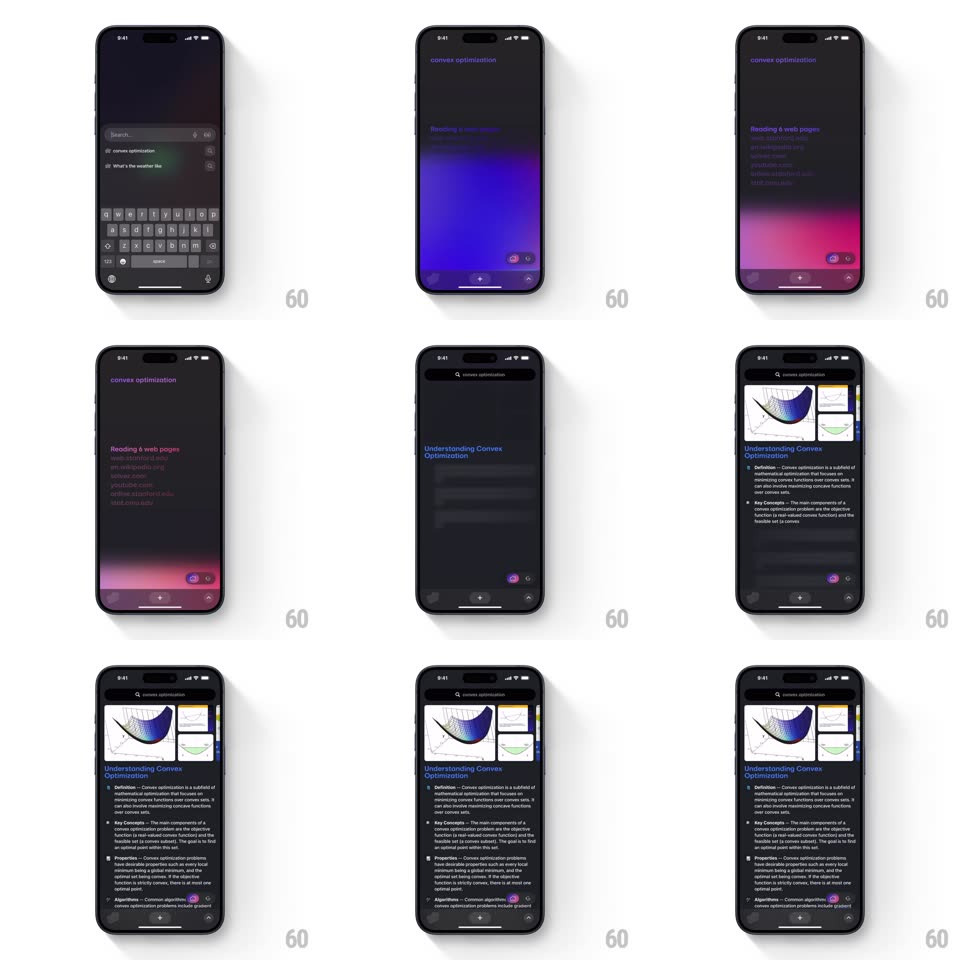

Media
Frame-by-frame

Rebuild this animation 1:1: Arc Search's AI answer loader - a glowing gradient wave rises while pages are read, then a structured results page assembles section by section.

Rebuild this animation 1:1: Arc Search's AI answer loader - a glowing gradient wave rises while pages are read, then a structured results page assembles section by section.
## Integration
Integration: stack-agnostic spec - springs given as stiffness/damping, timed motions as duration + curve; map every value to your framework and animation library of choice.
## Scene
Dark Arc interface: the query sits in the top bar. A status line ("Reading 6 web pages") appears over a luminous purple/pink gradient that floods up from the bottom edge. The gradient resolves into the "Browse for Me" results page: an image row, a bold title, and stacked sections (Definition, Key Concepts, Properties, Algorithms) with purple markers.
## Motion spec
Pattern: gradient-surge loader into section assembly.
- Query submit: the keyboard drops, the status line fades in (200ms), and the gradient wave rises from the bottom (translateY +40% to 0, 700ms, ease-out) with slow internal churn (two hue blobs rotating, 4s loop) and a soft top-edge shimmer.
- The status text updates as pages are read ("Reading 6 web pages" then "Summarizing..."), each swap a 150ms crossfade with a 4px rise.
- On completion the gradient crests (brightness pulse +20%, 200ms) and sinks away as results build: image row slides in from the right (300ms), title types in (fade + letterspacing settle, 250ms), then sections stack down with 80ms stagger, each sliding up 12px and fading (spring ~380/26).
- Each section's purple marker dot pops first (scale 0 to 1, 150ms) before its text block.
- A small glow pill ("Arc Search answers") fades in at the bottom last.
## Calibration
- The gradient is alive the whole load - static purple reads as broken, not loading.
- Sections assemble top-down in reading order; never all at once.
## Reduced motion
Gradient fades in static; sections fade without stagger.
## Don't miss
- The gradient hugging the bottom edge (like heat rising) is the signature - not a fullscreen wash.
- Results typography is compact with purple accent markers, not generic list bullets.